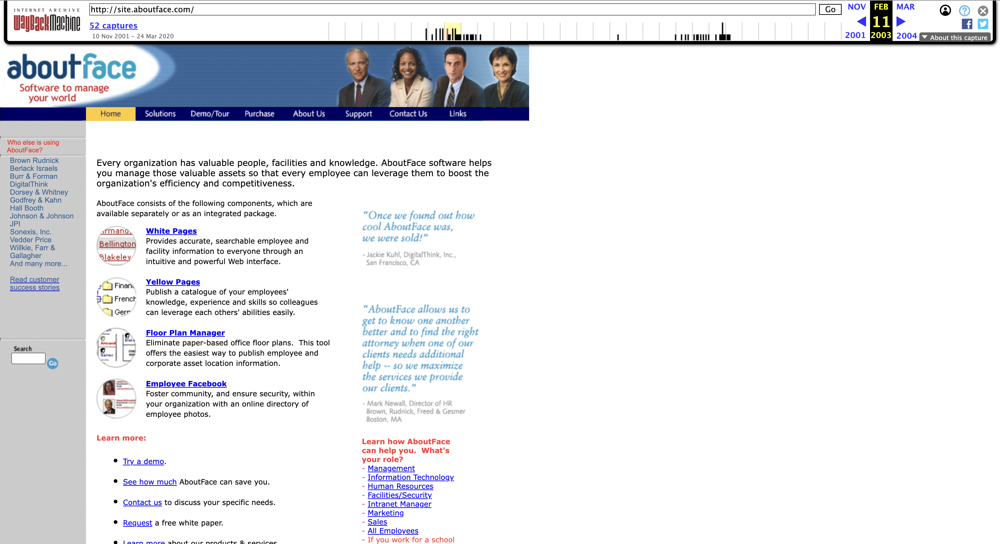

AboutFace is a photo directory webpage created in 2003 to connect colleagues. AboutFace claims to be a firm-wide facebook that helps everyone get to know each other. Their mission? To build community and interaction to help people work together better. This webpage represents how social spaces were displayed digitally before today’s mainstream social media sites such as Facebook, Instagram, and Tiktok. AboutFace utilized basic front-end code to experiment with their connection between people online and outside the workplace, investigating new communities from a virtual perspective.